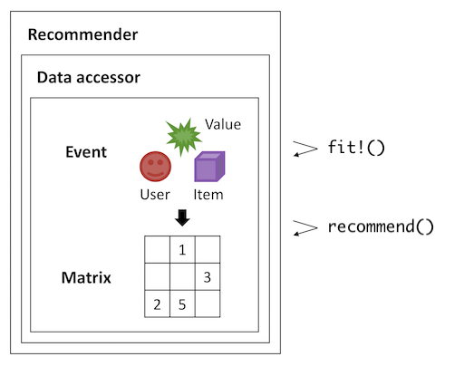

Recommendation.jl
Recommendation.jl is a Julia package for building recommender systems. The package allows you to quickly build and evaluate common recommendation models on your own data, by using one or more of the following functionalities:
- Non-Personalized Baselines that give unsophisticated, rule-based recommendation.
- Collaborative Filtering on either explicit or implicit user-item matrix.
- Content-Based Filtering by using the TF-IDF weighting technique.
- Evaluation based on a variety of rating and ranking metrics, with easy-to-use $N$-fold cross validation executor.
Additionally, the package is highly extensible because data accessor, model, and recommendation module are fully separated and independent in the implementation. That is, you can develop and test your custom recommendation logic at ease.
